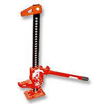
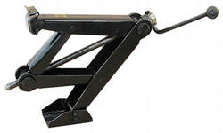
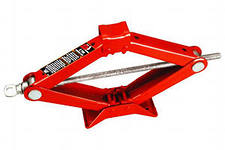
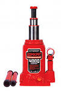
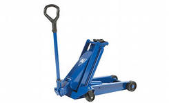
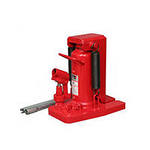
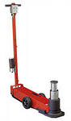
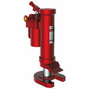

Какие бывают автомобильные домкраты
Грузоподъемность - максимальный вес, который может поднять домкрат (в кг или тоннах).
Высота подхвата - наименьшее расстояние между опорой (пол или земля) и подхватом (часть домкрата для упора в автомобиль) в нижнем положении.
Высота подъема - наибольшее расстояние между опорой и подхватом в верхнем положении.
Рабочий ход - разница между верхним и нижним положениями подхвата.
Устойчивость - способность домкрата сохранять свое рабочее положение при различных действиях сил, стремящихся сдвинуть автомобиль.
Усилие на приводной ручке - сила, необходимая при поднятии груза на необходимую высоту. Зависит от типа домкрата, массы поднимаемого автомобиля и количества циклов необходимых для полного поднятия.
Передаточное число - отношение площади плунжера гидравлического насоса к площади подъемного плунжера.
Универсальность - способность домкрата поднимать автомобили всех типов при разных способах их установки.
Общими для всех видов домкратов характеристиками являются высота подъема, рабочий ход, грузоподъемность, высота подхвата, вес и габариты.
Механический домкрат - одно из самых распространенных устройств для мелкого ремонта автомобилей. Подъем осуществляется за счет механизмов самого домкрата и силы человека. Он компактный, простой по конструкции и в применении, имеет низкую стоимость, что делает его популярным среди автомобилистов. Уступает по грузоподъемности гидравлическому, но довольно мобилен и занимает мало места. Его грузоподъемность не более 2 тонн. Такой бюджетный вариант подходит больше владельцам легковых автомобилей весом до 1-2 тонны для нечастого использования (поднятие или замена колеса в дороге). Эти устройства выручат и в гараже, и в дороге. Использовать их для ежедневных работ в гараже или автомастерской будет нерационально. К положительным качествам механических домкратов относятся: компактные габариты, эффективность использования, устойчивость и надежность.
Компактные габариты - можно возить в багажнике и занимает мало места в гараже.
Эффективность использования - высота подхвата от 8 до 10 см.
Устойчивость - четкое фиксирование груза на необходимой высоте и не требуются страховочные подпорки.
Надежность - очень простая конструкция и нечему ломаться. Главное соблюдать допустимый вес.
Винтовой, ромбовый винтовой и реечный домкраты чаще всего входят в комплектацию автомобиля.
Реечный домкрат (Hight-Jack) - простая и удобная в использовании конструкция, которая состоит из стойки с зубцами, вращающейся ручкой или рычагом, и может работать в горизонтальном и вертикальном рабочих положениях. Для снижения усилия при подьеме применяется удлиненная ручка. Конструкция позволяет использовать его в качестве лебедки, причем эффект будет лучше, ведь он и подтянет машину вперед, и оттянет назад или сдвинет в сторону. Конструкция реечного домкрата не позволяет с большой точностью регулировать степень подъема. С его помощью можно бортировать колеса. Он бывает разных размеров (для легковых и грузовых автомобилей), но больше применяется в грузовом автотранспорте. Для обычного легкового автомобиля лучше использовать гидравлический или винтовой домкрат. Домкраты типа Hight-Jack, Hi-Jack и Hi-Lift обладают высоким подхватом. Такие домкраты рассчитаны на усилие до 3 тонн и высоту подъема до 1350 мм. Реечный вид домкрата компактный, безопасный, относительно надежный, имеет внушительный размер и вес, высокую грузоподъемность, возможность поднимать низко расположенные грузы, большой и плавный рабочий ход и высокий показатель КПД (до 0,85). К достоинствам такого домкрата можно отнести следующее: возможность передвигать груз в вертикальном и горизонтальном направлениях, большая грузоподъемность, долговечность, простота, надежность, максимальная высота подъема, большой рабочий ход и постоянное усилие на его протяжении, а также низкая цена. К недостаткам относятся: внушительный размер и масса, применение в основном в грузовом автотранспорте и невозможность установки под днище автомобиля.

Реечный домкрат
Винтовой домкрат (два плеча на шарнирах и струбцина) может быть вертикальным или горизонтальным (ромбовым). Подъем или опускание груза происходит при вращении главной рабочей детали - винта. От шага резьбы винта зависит грузоподьемность домкрата: с увеличением шага она увеличивается. Корпус и винт являются несущими частями вертикального домкрата. Для винтового типа домкрата характерны малая высота подхвата и компактные размеры. Обычно они продаются с автомобилем в комплекте и используются для смены колеса на дороге. Для поднятия груза следует крутить рукоятку. К достоинствам винтовых домкратов относят следующее: небольшой вес и размеры, простота в установке и эксплуатации, простота конструкции (отсутствует необходимость применять масло или воздух в качестве рабочего тела), стабильное и небольшое усилие на приводной рукоятке, малая высота подхвата, удобство в работе, большой рабочий ход, максимальная высота подъема и низкая цена. Мягкие уплотняющие элементы не применяются. К недостаткам таких домкратов относят: недостаточная устойчивость в связи с небольшой площадью опоры, небольшая грузоподъемность, слежение за отсутствием грязи на винте, посторонних частиц, необходимость смазки шарниров и винта, не способность поднять сторону автомобиля на достаточную высоту.

Винтовой домкрат
Ромбовый винтовой домкрат (струбцина, которая сжимает два шарнирно закрепленных плеча) является самым распространенным среди механических домкратов. Четыре шарнирно-соединенные рычаги образуют ромб, они являются несущими элементами в данной конструкции. Изменения углов между рычагами приводит, соответственно, к изменениям расстояния между опорной площадкой и подхватом (увеличение или уменьшение). Большинство легковых автомобилей комплектуется им на заводах-изготовителях. Ромбовые домкраты имеют небольшой собственный вес, компактны, характеризуются низким значением минимального опускания подъемной платформы (у подкатных домкратов больше), просты в работе, дешевы. К опорной площадке этих домкратов не предъявляют особых требований. Ромбовые винтовые домкраты можно применять при подьеме автомобилей, характеризующихся низким клиренсом. К достоинствам ромбового домкрата относится: небольшая высота подхвата, жесткость конструкции, небольшой вес и размеры, дешевизна, простота в использовании, универсальность, большая опорная поверхность. К недостаткам относятся следующее: трение между элементами силовых сочленений, небольшой поднимаемый вес, низкая устойчивость, возможность использования исключительно легковым автомобилям и на ровной поверхности, не долговечность, повышенное усилие на приводной рукоятке, небольшой рабочий ход, необходимость прикладывать большое усилие в начале подъема.

Ромбовый винтовой домкрат
Бутылочный домкрат (вертикальный гидравлический домкрат) - рабочий цилиндр с поршнем, насос с рычагом и перепускной клапан между ними. Перепускной клапан состоит из двух клапанов: нагнетательного и всасывающего, что обеспечивает в рабочем цилиндре необходимое давление. Открытие нагнетательного клапана позволяет сбросить давление и опустить автомобиль. Домкрат имеет высокую грузоподъемность (2-100 тонн), плавный ход и большую высоту подхвата. Хранить и перевозить его можно исключительно в вертикальном положении. Бутылочные домкраты бывают одноплунжерными и двухплунжерными, ручными и электрическими. Они имеют небольшой вес и габариты, отличаются высокой надежностью и, в отличие от механических и гидравлических подкатных домкратов, значительно выше поднимают грузы. Размер минимального опускания платформы бутылочных домкратов достаточно велик, это не позволяет осуществлять подьем многих легковых автомобилей. Применяются преимущественно в грузовом автотранспорте. Необходим контроль за герметичностью и состоянием сальников, а также за уровнем жидкости. При хранении, в случае не частого использования, рекомендуется не затягивать до конца запорный механизм. Вертикальный домкрат, помимо основных преимуществ гидравлического, обладает следующим: большая площадь опоры, универсальность применения и компактность. Из недостатков можно выделить требование по транспортировке и хранению.
Бутылочный домкрат
Телескопический домкрат имеет схожую с бутылочным конструкцию, но имеет не один, а несколько рабочих штоков. В основе телескопического домкрата находится поршень. Такой домкрат применяют в вертикальном положении и в горизонтальных позициях. Он компактный и хорошо подходит большинству автомобилей. Подьем осуществляется при помощи подьемного рычага, который приводится в действие гидроцилиндром.

Телескопический домкрат
Подкатной домкрат - тележка на колесах и, как правило, с вертикально прикрепленной длинной ручкой для снижения прикладываемого усилия и удобства работы стоя. Он располагается горизонтально, что обеспечивает низкий уровень подхвата. Грузоподьемность составляет от 2 до 30 тонн. Такой домкрат относится к числу самых долговечных, имеет низкую минимальную высоту, а также встроенный противоперегрузочный клапан для защиты автомобиля от падения и рабочего от травм. Подкатные гидравлические домкраты широко применяются на станциях шиномонтажа, СТО или в автомастерских из-за быстроты в установке и работе. Их можно разделить на три группы: домкрат для личного пользования автомобилиста, домкрат для шиномонтажной мастерской и автосервиса, домкрат для тяжелого автомобиля и специальной автотехники. К преимуществам подкатных домкратов относятся: хорошая устойчивость, жесткость конструкции, незначительная начальная и очень большая максимальная высота подъема, низкое усилие на рукоятке для подъема, высокая прочность и надежность, способность поднимать огромный вес, возможность легкой установки под автомобиль, способность поднимать автомобили с минимальным клиренсом. К недостаткам таких домкратов относятся: высокая стоимость, большая масса и размер, необходимость твердой и ровной поверхности для работы. Существует разновидность подкатного домкрата - трансмиссионный, оснащенный специальной поворотной рамой. Такой домкрат может быть оснащен также педалью, обеспечивающей быстрый подъем.

Домкрат подкатной гидравлический
Зацепной домкрат - тяжелый, стационарный аппарат с верхней и нижней рабочими площадками для вывешивания груза. Конструкция состоит из зацепа и площадок. Подъем осуществляется практически с земли и груз надежно удерживается на высоте.

Пневматический домкрат - переносной, стационарный механизм, используемый на СТО и автосервисах для вывешивания колес при ремонте легких грузовиков, микроавтобусов и легковых автомобилей без приложения особых физических усилий. Также он незаменим при работе на рыхлом, болотистом или неровном грунте, если имеет значение скорость подъема, при небольшом зазоре между грузом и опорой. Привести его в действие можно с помощью сжатого воздуха от компрессора или насоса. Компрессор питается от генератора или электросети. Благодаря тому, что сжатый воздух поступает в подушки и осуществляет таким образом подъем, такой домкрат в основном используется на легковом шиномонтаже. Под большим давлением воздух имеет свойство сжиматься. Сжатый воздух, в отличие от жидкости, труднее удерживать в закрытом объеме (цилиндре), поэтому такой домкрат редко используется автомобилистами. Он представлен в виде плоской эластичной пневмоподушки из резины и армирующего материала или насоса и поршня в цилиндре. Пневмоподушка имеет способность добираться до труднодоступных мест при небольшом расстоянии между грузом и опорой, обладая при этом большой площадью подхвата. Чаще всего он используется для спасательных и аварийных работ. Такой домкрат имеет следующие характеристики: рабочее давление от 2-9 атм, высота подхвата 150 мм, грузоподъемность от 1-4 тонн, масса от 14 до 25 кг, высота подъема от 375 до 560 мм. Подушечные пневматические домкраты бывают двухсекционные и трехсекционные, которые различны в грузоподъемности и максимальной высоте подъема. Рабочее давление в пневмопроводе определяет грузоподъемность: для двухсекционных от 1 (2 атм.) - 2.5 тонн (6 атм.) - для легковых авто и для трехсекционных до 4 тонн (9 атм.) - для легких грузовиков, коммерческих микроавтобусов и джипов. К преимуществам таких домкратов относятся: большая площадь опоры, небольшая высота подхвата, снижение трудозатрат, мгновенный подъем, небольшой вес и конструкция для легкой транспортировки к месту работы, высота, позволяющая расположить домкрат под любым автомобилем. К недостаткам относится следующее: небольшая грузоподъемность и средний срок службы (от 5 до 6 лет), трудность удержания фиксированной высоты подъема, необходимость в стационарном насосе или компрессоре, защите рабочего баллона с эластичными стенками от острых предметов, строго вертикальном расположении.
Пневматический домкрат
Пневмогидравлический домкрат сочетает в себе пневматику и гидравлику. Он может быть выполнен в подкатном варианте, имеет грузоподъемность от 2 до 80 тонн и низкую начальную высоту подхвата. Применяется только как оборудование для автосервиса.

Пневмогидравлический домкрат
Надувной домкрат - прочная подушка, которую можно накачать компрессором или выхлопными газами. Такой домкрат имеет большую опорную площадь, небольшую высоту подхвата и почти не занимает места в сложенном виде. Он очень быстро надувается, создавая воздушную подушку, и приподнимает автомобиль над землей. Также его можно использовать на неровной поверхности. Для накачивания выхлопными газами используют специальный шланг, который одевается на выхлопную трубу автомобиля. К преимуществам надувных домкратов относят: высокая грузоподъемность от 3-4 тонн, низкий вес, простота использования, высокая максимальная и низкая начальная высота подъема, отсутствие усилий для подъема, возможность поднимать автомобиль с поврежденным днищем. К недостаткам относятся: необходимость следить, чтобы поверхность не попала на трубу выхлопной системы или острые торчащие элементы, при расположении его под автомобилем, возможность возникновения проблем при надувании от выхлопных труб (воронку необходимо держать руками и плотно прижимать к выхлопной трубе).
Надувной домкрат

По материалам сайта : http://www.automotivegroup.com.ua/